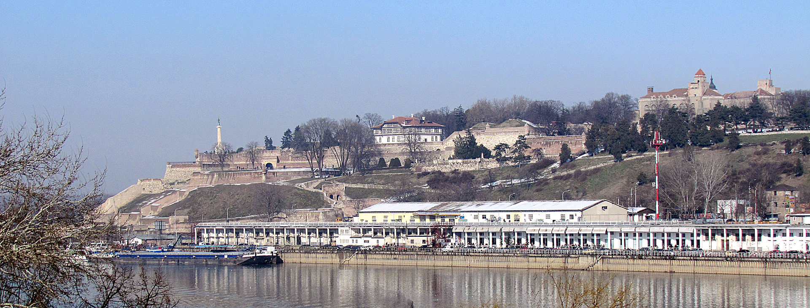
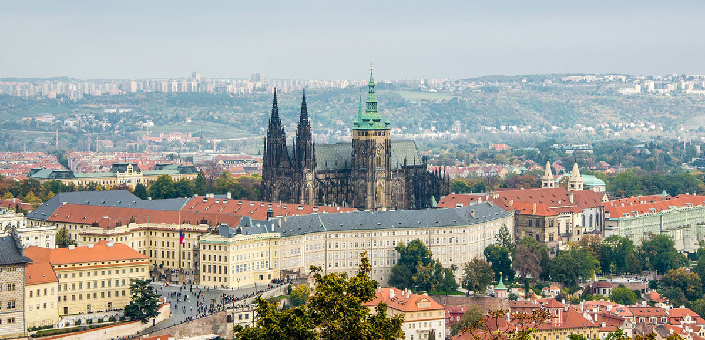

Osnova
Upoznavanje
Dobar dan, moje ime je Lav i pravim svoji prvi projekat.
Imam 18 godina, rodjen sam u Portugalu ali trenutno zivim u Srbiji.
Interesujem se za programiranje skoro 10 godina. Voleo bih da se time bavim do kraja zivota.
Idem u cetvtri razred srednje u skole, u trecu beogradsku gimnaziju, na IT smer.
Osim programiranja, treniram brazilsku dziudzicu, voleo bih uskoro da krenem i na Muay Thai, ali tek kad zavrsim svoju skolu.
Gradovi
Ovo su neki od gradova u kojima sam bio
Beograd

Beograd je grad u kome zivim.
Ovde sam od svoje 7. godine. Mnogo volim ovo mesto.
U centru Beograda ima mnogo zanimljivih dogadjaja i mesta da se obidje, kao na primer Kalemegdan
Kalemegdan je najveći beogradski park koji se nalazi u samom centru beograda. U njemu je jedan od važnijih statua Beograda, POBEDNIK. Plansko uređivanje Kalemegdana je počelo 1890. godine. Tada je vojska predala park Beogradskoj opštini. Ondašnji predsednik opštine Nikola Pašić odobrio je prvi kredit za uređivanje Kalemegdana od 10.000 tadašnjih dinara. Godine 1905, pristupilo se proširivanju parka, uređivanjem Malog Kalemegdana, koji se prostirao od paviljona "Cvijeta Zuzorić" do Zoološkog vrta.
Prag
 Prag, glavni grad Češke, oduvek je bio omiljena destinacija sa svojom bogatom istorijom, bajkovitom arhitekturom i jedinstvenim duhom. Grad leži duž reke Vltave i odiše romantikom sa svojim slikovitim mostovima, monumentalnim dvorcima i srednjovekovnim ulicama. Prag je domaćin nekih od najlepših evropskih spomenika, uključujući Praški dvorac, monumentalnu Katedralu Svetog Vita i Starogradsku astronomsku astronomsku oružarnicu. Grad je prepun kulturnih blaga, sa brojnim muzejima, galerijama i teatrima. Naročito je poznat po svojoj muzičkoj tradiciji, bilo da je reč o klasičnoj muzici ili živopisnoj alternativnoj sceni. Njegova autentična atmosfera očituje se u čuvenoj Starom gradu, gde se nalaze uske ulice popločane kaldrmom, tradicionalni restorani i šarene prodavnice. Tokom godine, grad slavi različite festivale i manifestacije, privlačeći posetioce iz celog sveta. Prag nije samo turistička destinacija, već i živi spomenik prošlosti i kulture. Njegova jedinstvena lepota, kulturna raznolikost i prijateljska atmosfera čine ga nezaboravnim mestom koje svako treba posetiti barem jednom u životu.
Rim
 Rim, večni grad, predstavlja epohalnu destinaciju sa duboko usađenom istorijom, spektakularnom arhitekturom i autentičnim karakterom. Ležeći na reci Tiber, Rim odiše grandioznošću sa svojim antičkim spomenicima, renesansnim palatama i živopisnim trgovima.
Centar pažnje je Koloseum, monumentalna amfiteatarska građevina koja svedoči o bogatoj prošlosti Rima. Pored toga, Forum Romanum i Panteon svedoče o veličanstvenoj arhitekturi antičkog Rima. Vatikan, sa Bazilikom Svetog Petra i Sikstinskom kapelom, predstavlja duhovni epicentar grada.
Rim je bogat kulturnim blagom, sa brojnim muzejima i galerijama, dok Trastevere nudi autentično iskustvo rimskog načina života, sa tradicionalnim restoranima i uskim ulicama.
Tokom cele godine, grad obeležava različite festivale i manifestacije, od religijskih ceremonija do svetkovina umetnosti. Rim je spoj prošlosti i sadašnjosti, gde se istorija isprepliće sa savremenim načinom života, stvarajući jedinstvenu atmosferu koja očarava posetioce iz celog sveta.
Rim, večni grad, predstavlja epohalnu destinaciju sa duboko usađenom istorijom, spektakularnom arhitekturom i autentičnim karakterom. Ležeći na reci Tiber, Rim odiše grandioznošću sa svojim antičkim spomenicima, renesansnim palatama i živopisnim trgovima.
Centar pažnje je Koloseum, monumentalna amfiteatarska građevina koja svedoči o bogatoj prošlosti Rima. Pored toga, Forum Romanum i Panteon svedoče o veličanstvenoj arhitekturi antičkog Rima. Vatikan, sa Bazilikom Svetog Petra i Sikstinskom kapelom, predstavlja duhovni epicentar grada.
Rim je bogat kulturnim blagom, sa brojnim muzejima i galerijama, dok Trastevere nudi autentično iskustvo rimskog načina života, sa tradicionalnim restoranima i uskim ulicama.
Tokom cele godine, grad obeležava različite festivale i manifestacije, od religijskih ceremonija do svetkovina umetnosti. Rim je spoj prošlosti i sadašnjosti, gde se istorija isprepliće sa savremenim načinom života, stvarajući jedinstvenu atmosferu koja očarava posetioce iz celog sveta.